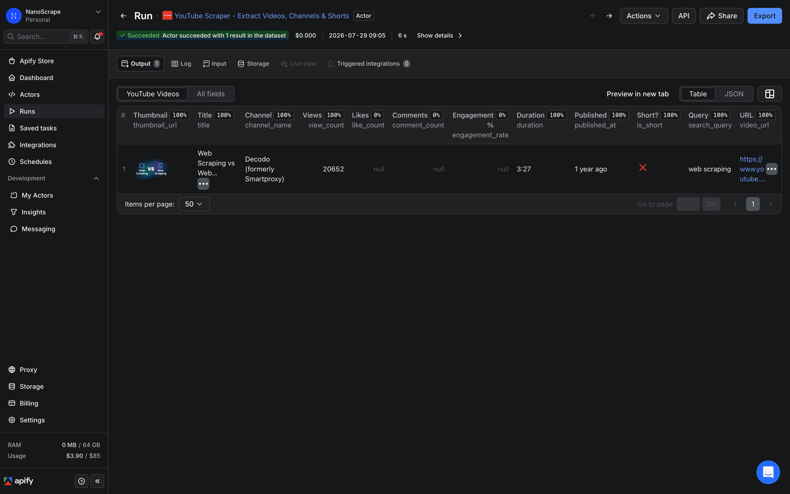
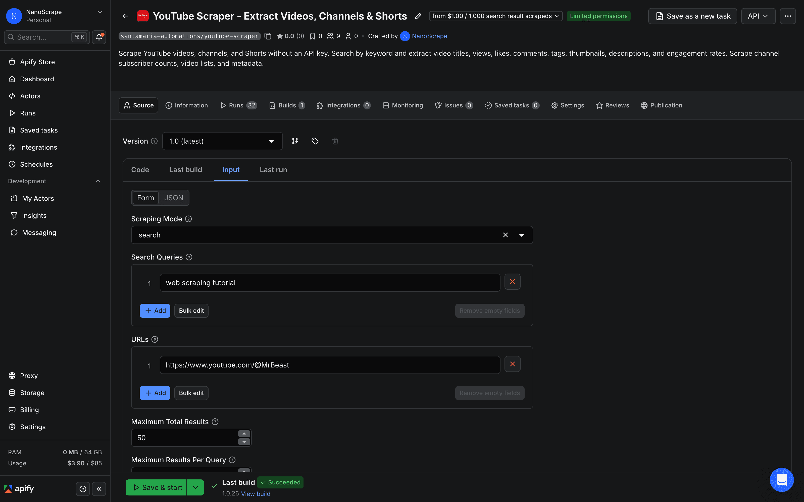
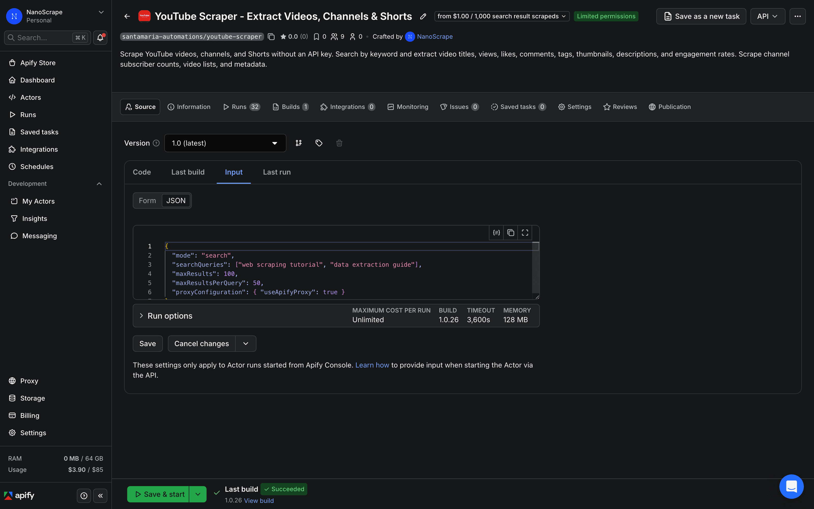
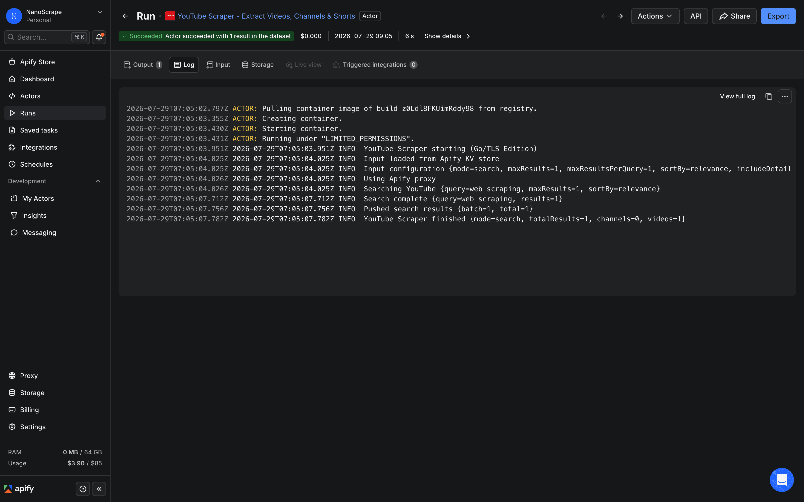
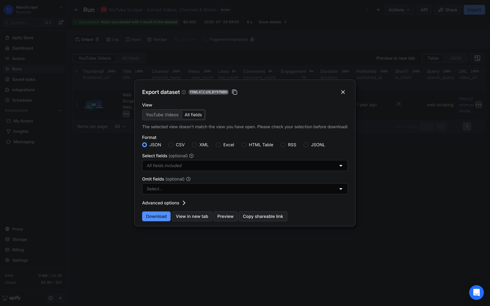

How to Scrape YouTube Videos, Channels, and Shorts Without an API Key
The YouTube Data API caps you at 10,000 quota units per day, forces you to register an OAuth app, and locks certain fields behind restricted access. This tutorial shows a different path: a pay-per-result scraper on Apify that returns video titles, views, likes, comments, tags, engagement rates, and full channel metadata with no API key, no quota ceiling, and no monthly subscription. A hundred videos costs about ten cents.

In this tutorial
What you get
The NanoScrape YouTube Scraper runs on Apify and supports four independent modes: keyword search, channel upload lists, Shorts, and direct video lookup by URL or ID. All four return results to a downloadable dataset. There is no YouTube Data API key required and no OAuth app to register.
- Search mode: give it one or more keywords and it returns matching videos with title, view count, duration, channel name, thumbnail URL, and publish date.
- Channel mode: give it a channel URL or handle and it returns every upload from that channel plus channel-level metadata (subscriber count, video count, verification status).
- Shorts mode: same as channel mode but filtered to Shorts only.
- Video mode: give it individual video URLs or IDs for deep metadata on those exact videos.
Enable includeDetails on any mode to add exact like count, comment count, engagement rate, full description, tags, and category. That requires a second page request per video, which adds $0.003 per video to the cost.
Prerequisites
- A free Apify account. The free tier gives you $5 of usage credit every month, enough for about 5,000 basic search results.
- One or more YouTube search keywords, channel URLs, or video URLs to scrape.
Create a free Apify account
- Open the actor page on Apify and click Try for free.
- Sign up with Google or email. The form takes about a minute to fill in.
- You land on the actor's input form inside Apify Console. The free $5 credit is added automatically.
Open the YouTube Scraper
After signing in, you are on the actor's page. Click Input in the left sidebar (or it may already be selected). You will see a form with a Mode dropdown at the top and fields for queries and URLs below it.

Choose a mode and configure inputs
The Mode field controls everything else on the form. The most common starting point is search:
{
"mode": "search",
"searchQueries": [
"web scraping tutorial",
"python automation 2026"
],
"maxResults": 100,
"maxResultsPerQuery": 50,
"sortBy": "relevance",
"includeDetails": false
}Key fields:
mode:search,channel,video, orshorts. See the mode reference below.searchQueries: an array of keywords (search mode only). Multiple queries run in parallel and duplicate videos are removed automatically.urls: an array of channel or video URLs (channel, video, and shorts modes).maxResults: total result cap across all queries or URLs. Set to0for unlimited (up to 10,000 per run).sortBy:relevance,date,views, orrating.includeDetails: set totrueto add likes, comments, tags, engagement rate, full description, and exact publish date. Costs an extra $0.003 per video.

Run the actor
Click Save and Run at the bottom of the input form. Apify starts the actor and you see the live log in the Log tab. For a search run returning 100 videos, the actor finishes in roughly 20 to 40 seconds.

If the run status shows FAILED, the most common causes are:
- Quota exceeded: your free $5 credit is spent. Top up in Apify Console billing.
- Empty results: the keyword returned nothing on YouTube. Try a broader search term.
- Invalid URL: for channel or video modes, check that the URL resolves to an existing YouTube page.
Export your results
Once the run succeeds, click Results (or the dataset link) in the run detail page. You see a table preview with thumbnails, titles, views, and all other fields.

Click Export and choose your format:
- JSON: full nested objects, best for programmatic processing.
- CSV: flat rows, opens directly in Excel or Google Sheets.
- Excel: formatted workbook with a YouTube Videos sheet.
You can also hit the dataset via the Apify API or connect to it from n8n, Make, or Zapier using the dataset ID shown in the URL.
The four scraping modes
- search: takes one or more keywords in
searchQueries. Returns videos from YouTube search results sorted bysortBy. Good for topic research, competitor analysis, and finding trending content. Deduplication across multiple queries runs automatically. - channel: takes one or more channel URLs in
urls. Returns channel metadata (subscriber count, video count, handle, verification badge) plus a list of the channel's uploaded videos. Good for auditing a creator's full catalog. - video: takes one or more video URLs or bare video IDs in
urls. Returns full metadata for those exact videos. Always fetches detail-level data regardless of theincludeDetailsflag. - shorts: takes one or more channel URLs and returns only the Shorts tab for that channel. Useful for tracking short-form content separately from long-form uploads.
Getting full video details
By default, search and channel modes return only the data visible in the YouTube search results or channel listings: title, view count, duration, channel name, thumbnail, and approximate publish date. That is fast and costs $0.001 per video.
Set "includeDetails": true and the scraper opens each video's page as a second request. This adds:
- Exact
like_countandcomment_count(search results only show approximate views). engagement_ratecalculated automatically as (likes + comments) / views.- Full
descriptiontext. tagsarray.category(Education, Gaming, Music, etc.).- Exact ISO 8601 publish date instead of the "2 years ago" relative string.
channel_subscribersfor the uploading channel.
{
"mode": "search",
"searchQueries": ["python web scraping"],
"maxResults": 50,
"includeDetails": true
}With includeDetails: true, each video costs $0.001 (search result) plus $0.003 (detail page) = $0.004 total. Fifty videos comes to $0.20.
includeDetails first to see which videos are worth enriching, then pass those video URLs to a second video-mode run. This avoids paying $0.003 for detail pages on low-relevance results.Field reference
Search results (default)
title: video title.video_url: full YouTube URL.thumbnail_url: HQ thumbnail image URL.view_count: total views as an integer.duration: video length as a string (e.g. "12:34").channel_nameandchannel_url: uploader identity.published_at: relative string like "2 years ago" (exact date withincludeDetails).is_short: boolean flag for YouTube Shorts.search_query: which of your input queries found this video.
With includeDetails: true (additional)
like_count: exact like count.comment_count: exact comment count.engagement_rate: (likes + comments) / views, as a decimal.description: full video description text.tags: array of tag strings.category: YouTube category label.channel_subscribers: subscriber count string (e.g. "4.2M subscribers").
Channel mode (additional)
name: channel display name.handle: @handle string.subscriber_count: subscriber count string.video_count: total number of uploads.channel_url: canonical channel URL.
Schedule recurring runs
From the actor page in Apify Console, click Schedules in the left sidebar and then Create schedule. Set a cron expression (for example, 0 6 * * 1 for every Monday at 6 AM UTC) and attach this actor with the same input JSON you tested manually.
Each scheduled run writes to a fresh dataset. To process the output automatically, connect a webhook in the schedule settings: Apify sends a POST request to your URL when the run finishes, with the dataset ID in the payload. From there you can pull the results into a database, a Google Sheet, or any other destination.
What it costs
- Search result: $0.001 per video (basic data from search results page).
- Video details: $0.003 per video (added when
includeDetails: true). - Channel scraped: $0.001 per channel (channel metadata plus video list).
- Actor start: $0.00005 per GB of memory used, minimum once per run (effectively less than a cent for typical runs).
Common scenarios:
- 1,000 search results (no details): $1.00.
- 500 search results with full details: 500 x ($0.001 + $0.003) = $2.00.
- 10 channels with 500 videos each (basic): 10 x $0.001 + 5,000 x $0.001 = $5.01.
- A weekly run pulling 100 new videos every Monday: roughly $0.40 per month.
The free Apify tier gives you $5 of credit every month automatically. You only need to add a payment method if your usage goes over that.
FAQ
Do I need a YouTube Data API key to use this scraper?
No. The scraper does not use the YouTube Data API at all. It scrapes YouTube the same way a browser would, so no API key, OAuth app, or quota to manage.
What is the daily or monthly video limit?
There is no hard monthly cap. Each run can return up to 10,000 results. For larger collections, run multiple instances with different queries or channel lists. Your effective limit is your Apify credit balance.
Can I scrape the actual comment text, not just the comment count?
The scraper extracts the total comment count per video. Full comment text extraction is not yet supported. The actor page lists open feature requests if you want to follow progress.
Can I search multiple keywords in one run?
Yes. Add multiple strings to the searchQueries array. All queries run in parallel and duplicate videos found by more than one query are returned only once. There is no per-query fee, just the per-result price for the videos returned.
How do I get exact like counts? The view count on the results page is approximate.
Set includeDetails: true. This opens each video page and extracts the exact like count, comment count, engagement rate, tags, full description, and exact ISO 8601 publish date. It adds $0.003 per video.
Does this work for YouTube Shorts?
Yes in two ways. Use shorts mode with a channel URL to pull all Shorts from a channel. Or use search or channel modes and filter results where is_short is true.
Is scraping YouTube legal?
Scraping publicly available data is generally permitted in most jurisdictions. The hiQ Labs v. LinkedIn ruling in the US confirmed that scraping public data does not violate the Computer Fraud and Abuse Act. YouTube's Terms of Service prohibit automated scraping, which creates civil risk (account suspension, cease-and-desist), but not criminal risk for public data. For GDPR purposes, any personal data (names, handles) in the output is subject to data protection rules. Consult a lawyer if you have specific compliance questions.
Can I connect the output directly to Google Sheets, Airtable, or a database?
Yes. Download the CSV from the dataset page and import it manually, or connect via the Apify API using the dataset ID. For automation, use an Apify webhook to trigger a downstream workflow in n8n, Make, or Zapier when the run finishes.
Related resources
- YouTube Scraper actor page: Full specs, pricing tiers, and comparison with alternatives.
- YouTube Scraper on Apify: Full actor documentation, all input parameters, and the complete field reference.
- All NanoScrape tutorials: Step-by-step guides for scraping Google Maps, Instagram, Reddit, and more.